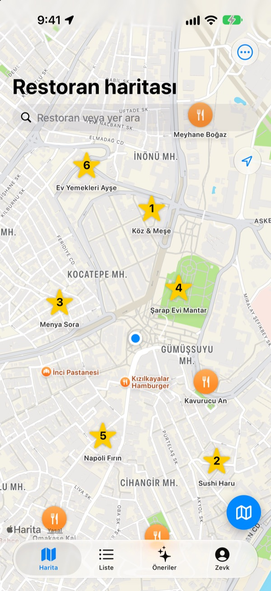
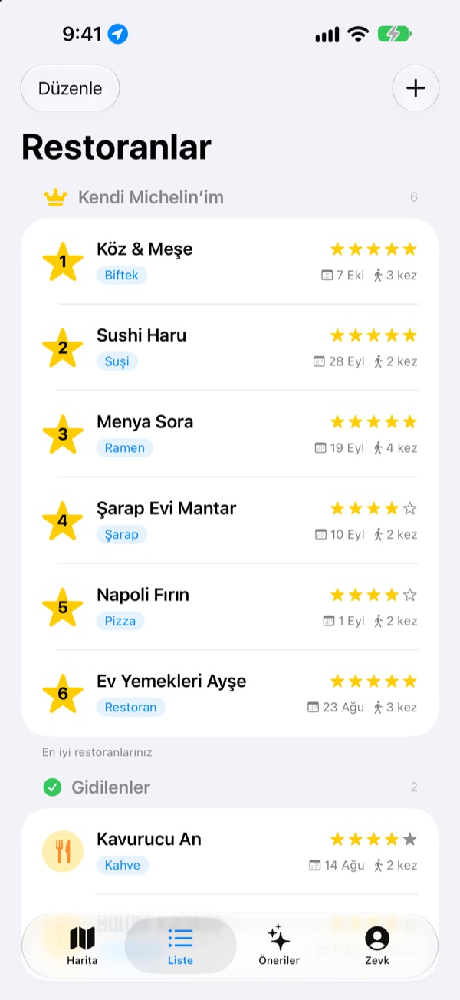
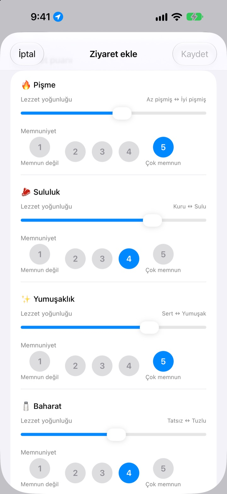
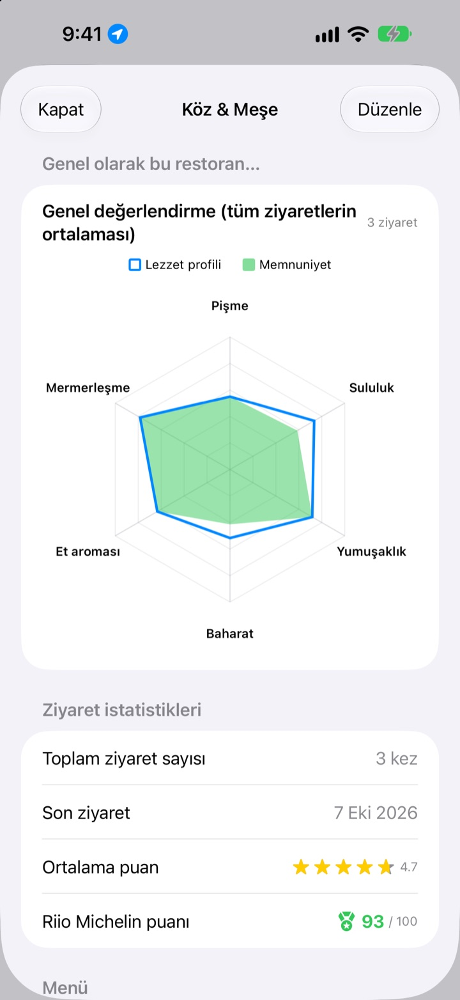

Lezzetli yerleri
artık unutmayacaksın
Gittiğin ve denemek istediğin restoranları haritaya işaretle, her ziyarette ne sipariş ettiğini, fotoğrafları ve lezzeti kaydet. Nerede yesem diye düşündüğünde cevap kendi notlarında.
Tüm özellikler ücretsiz. Üyelik yok, kayıtlar iPhone’unda kalır.

Bir tabağı puanla
Bir yemek türü seç, her tadın ne kadar yoğun olduğunu ve ne kadar beğendiğini ayarla. Uygulamadaki ziyaretle aynı ölçütler, aynı hesap.
Çok güzeldi ama ne sipariş etmiştim?
Restoranı çok sevdiğini hatırlıyorsun ama adı bulanık, ne sipariş ettiğini ya da çorbanın tuzlu olup olmadığını ise hiç hatırlamıyorsun. Sonunda yine arıyor, yabancıların yorumlarını okuyorsun. Insaeng kendi tattıklarını haritada saklar; bir sonraki seçimini kendi deneyiminle yaparsın.
Gidilenler, Gitmek istediklerim ve kendi Michelin’in
Haritada ara ya da yakındaki bir yere dokun, hemen kaydedilir. Gittiğin yerleri denemek istediklerinden ayrı tut, en sevdiğin altı yeri 1’den 6’ya sırala.
Biri iyi bir yer sorduğunda listeyi göstermen yeter.

Yemeğe göre sorular
Acılık ya da tuz gibi bir tadın yoğunluğunu kaydırıcıyla ayarlarsın, ne kadar beğendiğini ise ayrıca 1’den 5’e puanlarsın. Biftekte pişme derecesi ve suluk, suşide pirinç ve balık, ramende et suyu ve erişte sorulur.
Her ziyaret yemeği, fotoğrafları, yıldızları ve notları da saklar.

Tekrar gitmeye değer yerler rakamlarla görünür
Ziyaretler arttıkça her restoranda tüm ziyaretlerin ortalamasıyla bir genel değerlendirme ve yıldızlarla memnuniyeti birleştiren, 100 üzerinden bir Riio Michelin puanı görünür.
Kaydettiğin bir restorandan çıktığında, biraz sonra ziyareti kaydetmeni hatırlatan bir bildirim gelir.

Üç adımda başla
- 1
Restoranı kaydet
Haritada ara ya da yakındaki bir yere dokun.
- 2
Ziyareti kaydet
Yemek, fotoğraf, yıldız ve lezzet. Lezzet puanı isteğe bağlı.
- 3
Sıradakini seç
Top 6’ya ve puanlara bak, Apple Haritalar, Kakao Map ya da Naver Map ile yol tarifi al.
Yemek türüne göre puanlananlar
- 🍽️ Genel
- Acılık, Yoğunluk, Tatlılık, Tuzluluk, Yağlılık, Doğal tat
- 🥩 Biftek
- Pişme, Sululuk, Yumuşaklık, Baharat, Et aroması, Mermerleşme
- 🍣 Suşi
- Shari (pirinç), Neta (balık), Vasabi, Denge, Şekil, Sıcaklık
- 🍜 Ramen
- Et suyu, Erişte, Chashu, Malzemeler, Sıcaklık, Denge
- 🍕 Pizza
- Hamur, Sos, Peynir, Pişme, Malzemeler, Denge
- 🍷 Şarap
- Gövde, Tanen, Asidite, Aroma, Bitiş, Denge
- ☕ Kahve
- Asidite, Gövde, Aroma, Ağızda kalan tat, Tatlılık, Denge
Diğer yemekler ilk satırdaki genel ölçütlerle puanlanır. Kendi kategorilerini de oluşturabilirsin.
Sık sorulan sorular
Restoranı nasıl eklerim?
Haritanın üstündeki arama alanına restoranın adını yaz ve sonuçlarda “Restoran listeme ekle”ye dokun. Haritada görünen yakındaki bir mekâna dokunarak da hemen ekleyebilirsin. Aramada çıkmayan bir yer varsa bulunduğun konuma ya da haritada seçtiğin bir noktaya kendin ekleyebilirsin.
Gittiklerim, Gideceklerim ve İlk 6 nedir?
Gittiklerim: Daha önce gittiğin restoranlar. Bunlar için ziyaret kaydı tutabilirsin. Gideceklerim: Bir gün denemek istediğin restoranlar. Gittikten sonra restoranın ayrıntı ekranından “Gittiklerim”e taşı. İlk 6 (Kendi Michelin’in): En sevdiğin altı restoranı 1’den 6’ya kadar sıralarsın. “Gideceklerim” listesindeki restoranlar İlk 6’ya eklenemez.
Lezzet değerlendirmesi yapmak zorunlu mu?
Hayır, isteğe bağlı. Puanlarsan lezzet yoğunluğu ve memnuniyet restoranın genel değerlendirmesine eklenir ve Riio Michelin puanına sayılır.
“Bugünkü ziyaretin nasıldı?” bildirimi ne zaman gelir?
Kaydettiğin bir restoranın yakınında 5 dakikadan uzun kalıp ayrıldığında, yaklaşık 40 dakika sonra bildirim gelir. Bu özellik için konum erişimine “Her Zaman” izni ve bildirim izni gerekir. Bildirim almak istemiyorsan Ayarlar > Uygulamalar > Insaeng bölümünden bildirimleri kapat veya konum iznini “Uygulamayı Kullanırken” olarak değiştir. Konum kontrolü yalnızca cihazında yapılır; gittiğin yerler kaydedilmez ve hiçbir yere gönderilmez.
Konum iznini vermezsem uygulamayı kullanabilir miyim?
Evet. Konumu haritada kendin seçerek restoran ekleyebilir ve kayıt tutabilirsin. Yalnızca mevcut konumunun gösterilmesi ve ziyaret sonrası bildirim kullanılamaz.
Mekân aramasında sonuç çıkmıyor
Mekân araması için internet bağlantısı gerekir. Farklı bir adla ya da daha kısa bir anahtar kelimeyle yeniden ara. Yine de bulamazsan haritada bir nokta seçerek kendin ekleyebilirsin.
Kayıtlarım nerede saklanıyor? Diğer cihazlarla eşzamanlanıyor mu?
Restoranlar, ziyaret kayıtları ve fotoğraflar yalnızca bu iPhone’da saklanır. Mevcut sürüm diğer cihazlarla eşzamanlamayı desteklemiyor; ayarlardaki iCloud yedekleme ve geri yükleme de henüz çalışmıyor. iPhone’unun tam yedeğinde (iCloud yedeği veya bilgisayar yedeği) uygulama verileri de yer alır.
Tüm kayıtlarımı silmek istiyorum
Harita ekranındaki ayarlardan “Tüm verileri sil”e dokunduğunda restoranlar ve ziyaret kayıtları silinir. Bu işlem geri alınamaz, dikkatli ol. Fotoğraflar dahil her şeyi tamamen silmek için uygulamayı silmen yeterli.
Uygulamayı silip yeniden yüklersem kayıtlarım kalır mı?
Hayır. Kayıtlar yalnızca cihazında saklandığı için uygulamayı sildiğinde onlar da silinir. Uygulamayı silmeden önce bunu mutlaka göz önünde bulundur.
Gerçekten her şey ücretsiz mi?
Evet. Tüm özellikler ücretsiz; reklam yok, hesap yok. Ayarlardaki “Geliştiriciyi Destekleyin” tamamen isteğe bağlıdır ve hiçbir şeyin kilidini açmaz.
Sorunun yanıtı burada yoksa uygulamada Ayarlar > Destek bölümünden doğrudan bize yazabilir ya da mizzking75@gmail.com adresine e-posta gönderebilirsin. Uygulama sürümünü, iPhone modelini ve hangi ekranda ne yaptığını belirtirsen sorunu daha hızlı inceleyebiliriz.